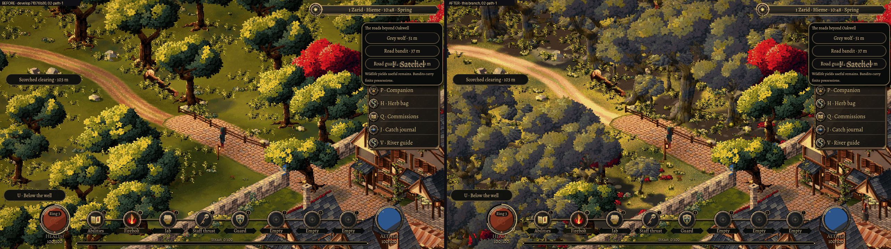
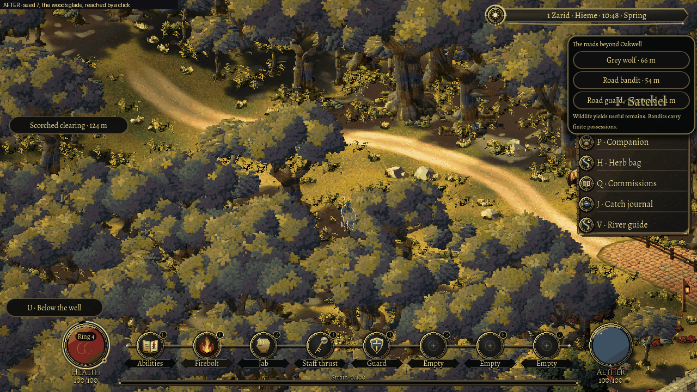
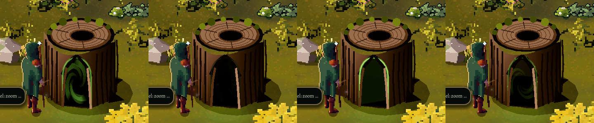
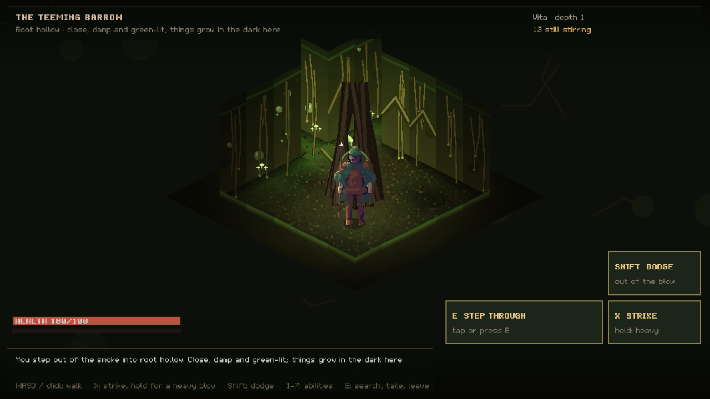
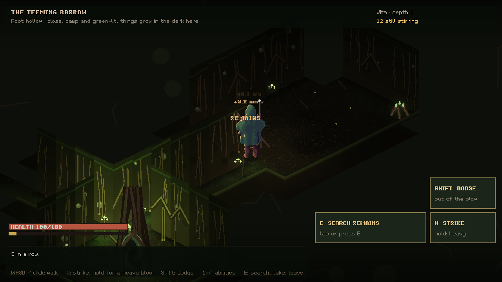

6 November 2026
Through the smoke
West of Oakwell, the trees now close over the path. In a woodcutters' clearing, an old stump has gone hollow, and smoke stands in the cleft at its foot.
Leave Oakwell by the west gate and the path used to run between scattered oaks on a bright lawn. It read as a park, not a wood. That side of town is now an old wood: twisted oaks whose crowns meet overhead, young trees and undergrowth reaching out at the margin, and light breaking through the canopy in broad pools and small flecks.

None of it is placed by hand around Oakwell. The wood follows rules for woodland, read from the town's plan, so another town with a wood beside it would grow its own. The path stays readable, with no old oak standing too close in front of it. Up to three sunlit glades open off it. The wood also carries on past the edge you can walk to, so the far side is more trees rather than lawn and then nothing. Trunks, boulders and fallen logs block your way; ferns let you through.


The colours took the most work. Oakwell's final colour grade deepens shadow and lifts colour across the whole picture, and the first attempt at the wood came out with black crowns and a mustard floor. Its colours are now chosen so that the graded picture matches the reference painting. An image review against that painting scored the view outside the gate 3.5 out of 10 before and 6.5 after. It also named what is still missing: the upper canopy still reads partly as a carpet of rounded crowns, and the boulders are the shared grey stones used elsewhere.
The stump in the clearing
A short walk off the path, an old oak's stump stands hollow at the heart. A slow swirl of dark green smoke stands upright in the cleft at its foot. It is the first dungeon you can walk into from Oakwell. In Sprawl, dungeons are other realities, and their entrances form in ordinary things behind a veil of smoke.

Walk into the smoke, press E beside it, or click the stump. The veil rolls out until it fills the screen, a card names the place, and you step out of a matching opening on the other side: the Teeming Barrow, a root hollow.

Packed loam and moss lie underfoot, living roots bind the earth walls, and glowcaps give the only light. Rooms reveal themselves only as you see them. Rootlings, barkback beetles and spore toads wait in them, and the Rootmother waits in the sanctum. Each one marks its blow on the ground before it lands, so you can step aside. You fight them with the same controls as in town: strike, hold for a heavy blow, dodge, and use your abilities. Badly hurt, they break off and run.

What they leave behind is what they were: living root, glowcaps, bark carapace, mandibles, toad skin, spore sacs and heartwood. Nothing pays coin. Root-wrapped hoards hold the realm's shards. Walk back to the hollow trunk you came through to step out onto the same spot in the wood. If you are beaten down inside, the smoke throws you back out.
The dungeon, your bag and the side of the veil you were on are saved together. Continue reopens the game inside or outside, wherever you stopped.
Two pieces that had to meet
The wood and the dungeon were built side by side, and trying them together found a problem. The new wood grew so dense that no open ground was left near the walls, so the stump moved to a spot 43 metres out in the far south-west. The clearing rule now fells the few trees whose crowns would hide the stump from the camera, leaving their plain stumps behind. The entrance now stands about 16 metres from the walls, a short walk from the west gate.
This is a first slice: one realm, at its first depth. The rules already know other kinds of entrance, such as an old door in a wall or a cave mouth, but only the stump stands in Oakwell. Deeper levels and the rest of the dungeon plan are still to come. Both pieces were checked in the running game with automated walks, keys and clicks. Neither has had a human playtest yet.